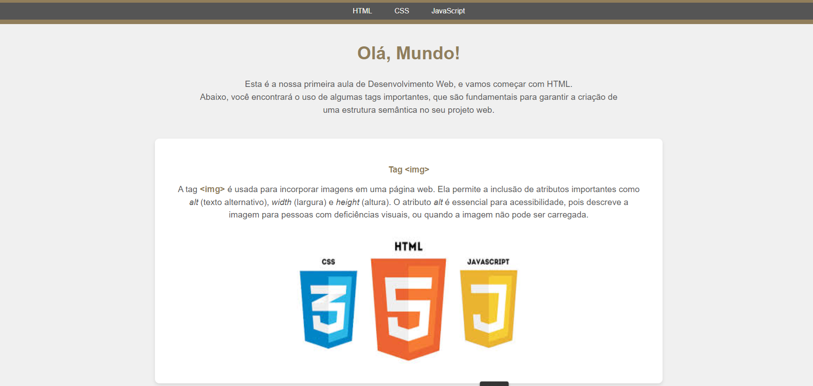

Sou apaixonada por tecnologia e pela sua capacidade de resolver problemas e otimizar processos. Com experiência em PL/SQL, Oracle APEX, JavaScript, Java e integração de sistemas REST, já desenvolvi melhorias e novas funcionalidades para ERPs voltados à indústria têxtil. Além disso, concluí o curso de Introdução à Ciência da Computação da Universidade de Harvard, onde aprendi a pensar algoritmicamente e desenvolvi projetos utilizando linguagens como C, Python e SQL. Também sou formada no Bootcamp FullStack da Le Wagon Brasil, com habilidades em Ruby on Rails, HTML, CSS, JavaScript e APIs. Atualmente, estou aprofundando meus conhecimentos em TrakSys, C# e .NET, além de cursar Análise e Desenvolvimento de Sistemas.
Trabalhos Recentes
Acesse o site →
Currículo - Html| CSS | JS
Desenvolimento Web com Html, Css e JavaScript. Currículo desenvolvido durante o Mouts Academy.
Acesse o site →
Marketplace - Guitarz Switch
MarketPlace Desenvolvido durante o BootCamp Le Wagon SP, em conjunto com mais dois colegas. Tecnologias, Html| CSS | JS | RUBY ON RAILS
Acesse o site →
Tela Login - Html| CSS | JS
Projeto de Desenvolvimento Web com HTML, CSS e JavaScript, incluindo uma tela de login funcional que utiliza a API IndexDB para armazenar dados de forma local.
Acesse o site →
Desafio PNG - Html| CSS | JS
Desafio de replicar um site à partir de uma imagem PNG fornecida pelo professor.Utilizando HTML, CSS e JavaScript.

Acesse o site →
Site Aprenda Html Básico - Html| CSS
Primeiro Aula Mouts Academy - Desenvolvimento Web, onde desenvolvemos um site para ensiar Html básico utilizando as principais Tags.
Acesse o site →
Formulário de Cadastro- Html| CSS | JS
Desenvolvimento de um Formulário Básico de Cadastro onde usei API dos Correios para buscar Endereco quando o CEP é informado.